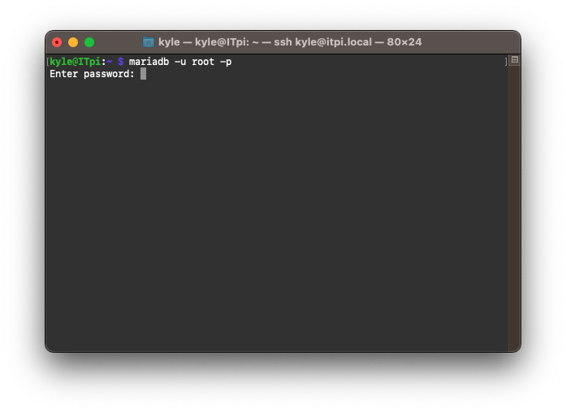

Hopefully you won't need to reference this page too often. I've worked very hard to make this system robust and fault tolerant. Below, you'll find everything you need to know when it comes to running this whole server / database / website clock-in nonsense.
- Kyle
This is kinda technical so I'll go ahead and apologize in advance. Hopefully I've explained the process well enough that everything goes smoothly, and with minimal confusion.
Using an ethernet cable, connect the Pi to the router through one of the "Fast Ethernet" jacks located on the back of the router. It doesn't matter which port you choose, as long as it's not the blue one.
Note: You shouldn't need to login to the Pi. It should be automatic. However if you do, the username is "kyle" and the password is "214itpi".
Network: TNT-Lan 2.4
Password: locallogin
This is going to make use of the Pi's terminal. Be sure to follow all instructions carefully. Spelling, punctuation, and capitalization are all very important when navigating the terminal.
A window similar to this should appear.
In the terminal window, type the command
ifconfig then hit the 'Enter'
key.
You are looking for the "eth0: inet" address. That is the Network
IP address for the Pi. Write that number down, you may need it
later.
It will be in a format similar to 192.168.__.____
Next, type
cd Documents/stationserver then hit
the 'Enter' key.
Inside the
Documents/stationserver directory,
type npm start then hit the 'Enter'
key. Assuming the terminal doesn't continue past
starting 'node server.js' you're
done. The server is running.
If it does call or text
Kyle.
Leave this window open and running.
The database lives on the Pi along with the server, using MariaDB. More than likely the MariaDB service started along with the rest of the Pi and you wont have to do anything to make the database work. However if you need to start the service for whatever reason, in a new terminal window, enter the command sudo service mariadb start
In a new terminal window, enter the command mariadb -u root -p then hit the 'Enter' key. The password is "TestDB".
Success looks like this:
Check to make sure the 'stationTimeClock' database exits by
entering the command
SHOW DATABASES and looking for
'stationTimeClock' in the list of results.
Assuming the stationTimeClock database exists, select it by using
the command
USE 'stationTimeClock'
and check that the 'timeclock' and 'userlist' tables exists with
the command SHOW TABLES
The "front-end" is where you are now. Its the whole of the website. Below you can find instructions and explanations to how the different parts of the website function.
The time-clock page takes a scanned barcode and makes an "In" or and "Out" request for the provided user. The appropriate action is calculated by the server itself. Once the appropriate action is completed, the page will update to display a "Time Card" of sorts, showing the user's name, the action taken, and the time said action was taken.
The registration page possesses the ability to lookup any user's barcode by name should they lose their card and need it to be reprinted. In the event multiple guards exists matching given search name, all matching users will appear in a list with their ID number next to their names, as well as a print button to print their cards if needed.
The page can also create new users in the User Database and generate an ID number / card for them. Do not create ID's for users who already exists. Look them up and reprint their card. The page will attempt to prevent the creation of duplicate guards but will not be able to save you in all cases.

In the event that the webpages aren't working as intended, visit the "Register" page. Look up a user who you know for certain exists. Should nothing return, there are a couple of reasons to why that'd be: